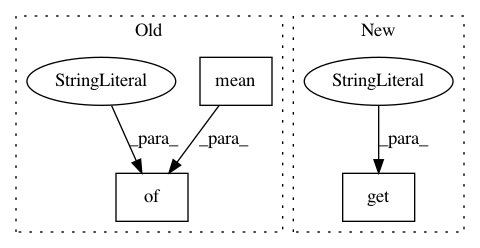

fcb01e3b18c0b3304c4ff0b1f0b8b4ede518f762,ludwig/features/numerical_feature.py,NumericalFeatureMixin,get_feature_meta,#Any#Any#Any#,58
Before Change
compute = backend.df_engine.compute
if preprocessing_parameters["normalization"] is not None:
if preprocessing_parameters["normalization"] == "zscore":
return {
"mean": compute(column.astype(np.float32).mean()),
"std": compute(column.astype(np.float32).std())
}
elif preprocessing_parameters["normalization"] == "minmax":
return {
"min": compute(column.astype(np.float32).min()),
"max": compute(column.astype(np.float32).max())
After Change
@staticmethod
def get_feature_meta(column, preprocessing_parameters, backend):
numeric_transformer = get_from_registry(
preprocessing_parameters.get("normalization", None),
numeric_transformation_registry
)
In pattern: SUPERPATTERN
Frequency: 3
Non-data size: 3
Instances
Project Name: uber/ludwig
Commit Name: fcb01e3b18c0b3304c4ff0b1f0b8b4ede518f762
Time: 2020-12-03
Author: jimthompson5802@gmail.com
File Name: ludwig/features/numerical_feature.py
Class Name: NumericalFeatureMixin
Method Name: get_feature_meta
Project Name: Scitator/catalyst
Commit Name: 8ef3f88cfe38c9178ec53cca4025eeacbe230741
Time: 2019-09-20
Author: scitator@gmail.com
File Name: catalyst/rl/core/sampler.py
Class Name: ValidSampler
Method Name: _run_sample_loop